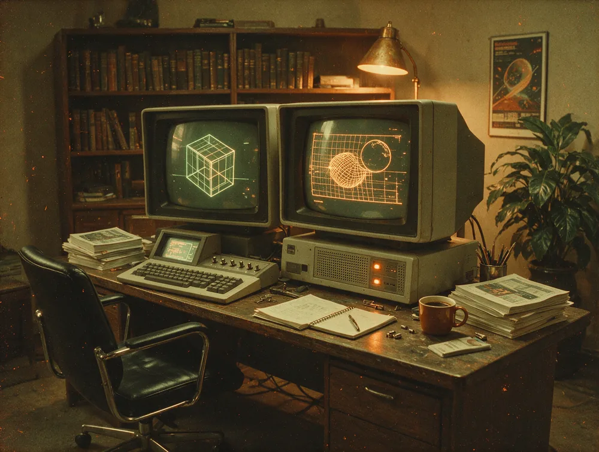
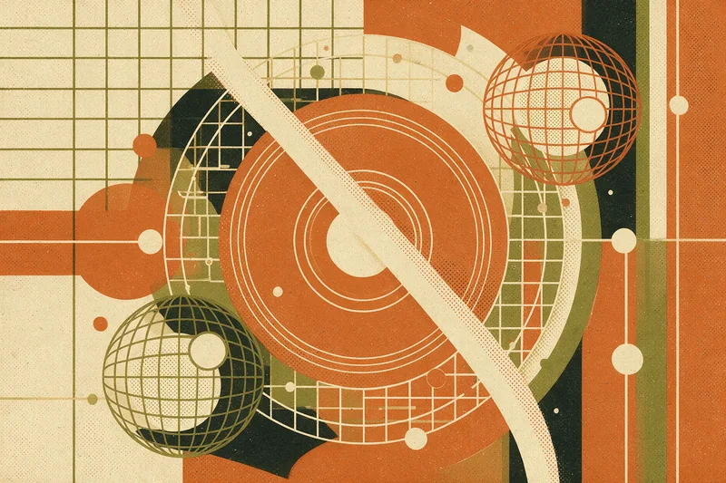
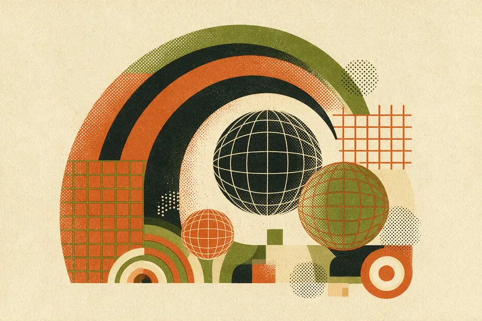
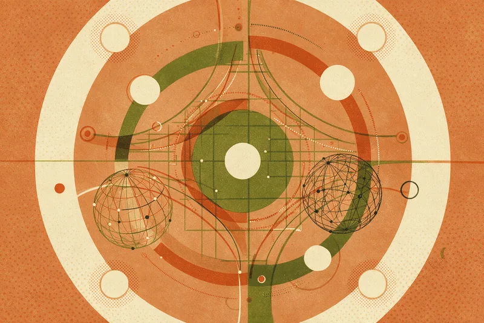
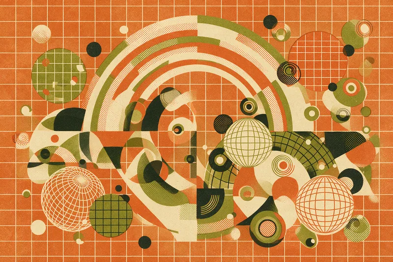

Ein Retro-Futurism-System für Beyond Our Borders: warme Druckfarben, brutale Display-Typografie, geometrische Strichgrafik und Filmkorn. Jede Regel unten ist bindend — sie ist der Unterschied zwischen „sieht retro aus“ und „ist ein System“.
Kein Reinweiß, kein Reinschwarz. Jede Fläche hat Papierton. Creme statt #FFF, Tinte statt #000.
Kreise, Bögen, 45°-Diagonalen, Drahtgitter. Keine organischen Formen, keine Verläufe als Dekor.
Display schreit in Versalien. Fließtext bleibt klein, ruhig und in Satzform. Nie beides gleichzeitig laut.
Korn, Halbton, Risograph-Fehlpassung. Die Oberfläche soll wie Papier von 1974 wirken.
Vier Grundflächen, ein Akzent. Mehr Farben gibt es nicht — Abstufungen entstehen über Fläche und Kontrast, nicht über neue Töne.
60 % Creme (Grund) · 25 % Ink (dunkle Panels) · 10 % Olive (ein bis zwei Panels pro Seite) · 5 % Rust. Rust ist Akzent, kein Hintergrund — die einzige Ausnahme ist das Final-CTA-Panel.
| Kombination | Ratio | Status | Erlaubt für |
|---|---|---|---|
| Ink auf Cream | 14.8:1 | AAA | Alles |
| Bone auf Ink | 13.9:1 | AAA | Alles |
| Bone auf Olive | 7.4:1 | AAA | Alles |
| Bone auf Rust | 5.2:1 | AA | Alles ab 16 px |
| Rust auf Cream | 4.6:1 | AA | Fließtext ab 16 px, Display, Icons |
| Rust Soft auf Ink | 6.1:1 | AA+ | Akzent auf dunklen Panels — immer statt Rust |
| Olive auf Cream | 6.9:1 | AA+ | Text, Rahmen |
Auf Ink und Olive nie --bob-rust für Text verwenden —
dort gilt --bob-rust-soft. Genau dafür existiert der Ton.
Vier Schriften mit vier klar getrennten Aufgaben. Keine Schrift übernimmt die Rolle einer anderen.
Headlines, Zahlen, Logo, Kartentitel. Immer Versalien, Laufweite −0.02 em, Zeilenhöhe 0.88.
Absätze, Lead, Karteninhalt. Gemischt-schrift, 400/500/700, Zeilenhöhe 1.6.
Eyebrows, Buttons, Nav, Metadaten, Tabellenköpfe. Immer Versalien, Laufweite +0.16 em.
Parisienne. Maximal einmal pro Seite — als Signatur-Ornament, nie als Headline oder Label.
Regel: 2–4 Zeilen, harte Umbrüche per <br>,
genau eine Zeile in Rust. Nie das erste und letzte Wort einfärben, nie mehr als eine Zeile.
12-Spalten-Raster, Gap 24px, max. 1200px, Gutter
clamp(16px, 4vw, 40px). Bei ≤900px auf 6 Spalten, bei ≤560px auf 2.
25 Icons, eigens für BOB gezeichnet. 24×24-Raster, Strichstärke 1.75, runde Enden und Ecken. Nur Kreise, Bögen und 45°-Diagonalen. Ornamente (Sparkle, Starburst, Globe, Orbit) sind flächig gefüllt, alles andere ist Strich.
Badge-Farben rotieren in Kartenreihen fest in der Folge Rust → Olive → Ink → Rust. Radius 18px auf 54px — nie ein Kreis, nie ein Quadrat.
Funke, Orbit-Ring, Drahtgitter-Terrain und Rundstempel.
Maximal drei Ornamente pro Bildschirmhöhe, immer mit pointer-events:none,
nie über Fließtext. Der Stempel rotiert in 22 s, hält bei prefers-reduced-motion an.
Alle Motive sind in einem Zug erzeugt und teilen dieselbe Anweisung: 1970er-Retro-Futurismus, Duoton aus Terracotta/Creme/Olive, Risograph-Korn, flache Editorial-Ästhetik, kein Text im Bild.





„1970s retro-futurism, [MOTIV], duotone risograph print, limited palette of terracotta orange #C2522F, warm cream #F7F1E6 and deep olive #54562E, halftone grain, heavy film grain, vintage print texture, flat editorial poster aesthetic, no text“
Nur [MOTIV] wird getauscht. Der Rest bleibt wörtlich —
so bleiben alle Motive eine Familie. Freisteller zusätzlich mit „isolated cutout, transparent background“.
Jeder Button endet rechts in einem Kreis-Dot mit Icon — das ist die Signatur des Systems. Beim Hover wandert der Dot 3px nach rechts, der Button 1px nach oben. Pro Bildschirm genau ein Primary.
Zerlegt Anfragen in Teilaufgaben und verteilt sie parallel an spezialisierte Agents.
Führt mehrstufige Prozesse quer über deine bestehenden Tools aus.
Erdet Antworten in deinen Dokumenten — mit Quellenangabe, nicht mit Raten.
Verbindet sich mit APIs und bestehender Infrastruktur — ohne Migration.
BOB hat unsere Report-Pipeline von drei Tagen auf zwanzig Minuten gebracht. Ohne eine Zeile Migration.
Der Unterschied ist, dass es fertige Arbeit liefert statt Vorschläge. Das war vorher nie so.
Quellenangaben bei jeder Antwort. Genau das, was unser Audit verlangt hat.
Die drei Blöcke, aus denen sich jede Seite zusammensetzt — live, nicht als Screenshot.
BOB vereint Multi-Agent-Orchestrierung mit Echtzeit-Wissensabruf und Workflow-Automatisierung — und macht aus Plänen fertige Arbeit statt bloßer Antworten.
Ich laufe auf HERMES — einem Multi-Agent-Framework mit zentralem Orchestrator, der Intent interpretiert, Aufgaben plant und an die richtigen Agents verteilt.
Erzähl uns, was erledigt werden soll. Wir zeigen dir, wie BOB es tatsächlich fertigstellt.
Projekt startenDisplay immer in Versalien, mit genau einer Rust-Zeile als Betonung.
Jeder Button endet in einem Kreis-Dot mit Icon — ohne Ausnahme.
Dunkle Panels als abgerundete Slabs (32px) in den Creme-Fluss setzen, nie randlos über die volle Breite.
Korn-Overlay auf jeder Seite aktiv lassen — 5,5 % Deckkraft, auf Mobil 4 %.
Auf Ink und Olive --bob-rust-soft als Akzent verwenden, nicht --bob-rust.
Neue Bilder ausschließlich über den dokumentierten Prompt erzeugen, damit die Bildfamilie geschlossen bleibt.
Reinweiß (#FFF) oder Reinschwarz (#000) einsetzen. Es gibt nur Creme und Ink.
Farbverläufe, Glow, Neon oder Glasmorphismus. Das System ist gedruckt, nicht beleuchtet.
Anton für Fließtext oder Space Mono in Gemischtschrift. Jede Schrift hat eine Aufgabe.
Mehr als ein Primary-Button pro Bildschirm oder mehr als drei Ornamente pro Bildschirmhöhe.
Die Signaturschrift Parisienne für Headlines, Labels oder mehrfach pro Seite.
Fremde Icon-Bibliotheken mischen. Neue Icons werden im 24er-Raster mit Strichstärke 1.75 nachgezeichnet.
Vollständige Liste in assets/tokens.css. Komponenten in assets/bob.css.
Hardcodierte Werte sind im Produktionscode nicht zulässig.
| Token | Wert | Verwendung |
|---|---|---|
| --bob-cream | #F7F1E6 | Seitengrund, Karten |
| --bob-rust | #C2522F | Akzent, CTA, Display-Betonung |
| --bob-rust-soft | #D9764F | Akzent auf Ink/Olive |
| --bob-olive | #54562E | Sekundäres Panel |
| --bob-ink | #171310 | Nav, dunkle Panels, Footer |
| --font-display | Anton | Alle Display-Größen, Versalien |
| --font-body | Space Grotesk | Fließtext, Lead |
| --font-mono | Space Mono | Labels, Buttons, Nav, Meta |
| --font-script | Parisienne | Signatur, max. 1× pro Seite |
| --r-pill | 999px | Button, Chip, Input, Nav |
| --r-lg / --r-xl | 22px / 32px | Karte / Panel |
| --grid-gap | 24px | 12-Spalten-Raster |
| --wrap | 1200px | Maximale Inhaltsbreite |
| --ease | cubic-bezier(.2,.7,.3,1) | Alle Übergänge — mechanisch, nie federnd |
| --grain-opacity | .055 | Korn-Overlay (Mobil .04) |